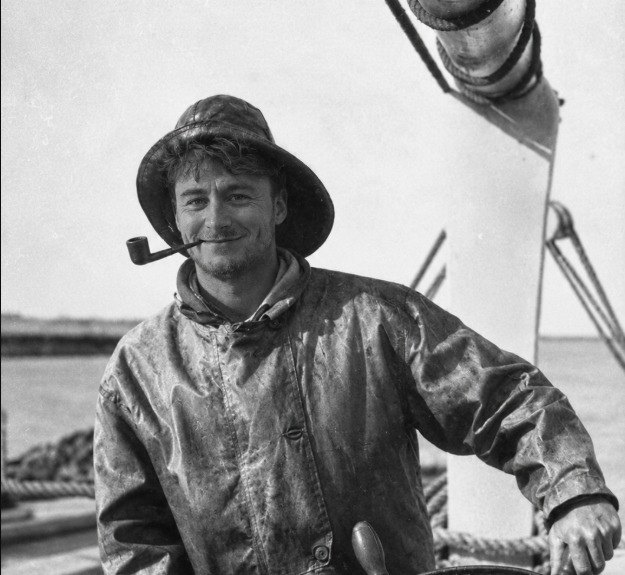
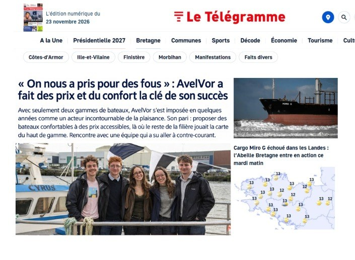
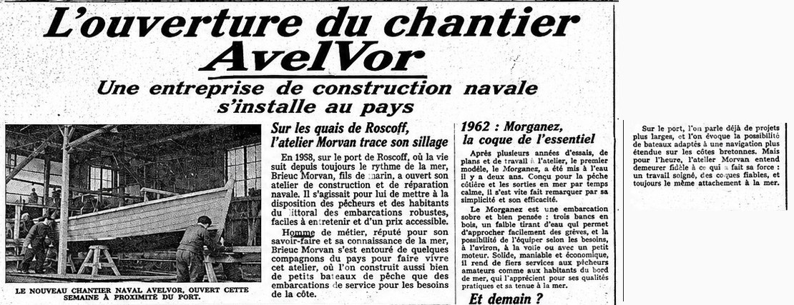

Flax fibres
We are studying the use of flax fibres as reinforcement in a composite material. Being plant-based, they are one way to reduce our use of conventional fibres.
Plant-based resourceAvelVor means "sea wind" in Breton : the wind you feel on your face the moment you leave the harbour. Whether you go fishing at dawn or cruise until sunset, our boats are built to bring you that feeling, safely and comfortably.
Shaped by the sea wind.
Welcome aboard
Founded in 1958 in the port of Roscoff by Brieuc Morvan, AvelVor is a family boatyard now run by the third generation. We design and build pleasure boats with plastic hulls and a wood finish: a simple fishing boat, a small cabin cruiser and a luxury cruiser for the open sea.
Everything happens under one roof in our 4,000 m² yard on the Roscoff roadstead: structural calculation, moulds, hull moulding, wood finishing, fit-out and sea trials. Our 26 engineers, moulding technicians, carpenters and painters build around twenty hulls a year, for our own range and for other boatbuilders.
Our philosophy. A good boat starts long before the first hull comes out of the mould: in the calculation, in the choice of material, and in respect for the sea it will sail on. We build hulls that are light enough to perform well, strong enough to last decades, and made with as little waste as we can manage.
Our brand film, with English subtitles.
Every hull is calculated before it is moulded. We model each hull with finite elements and test our own samples.
Hulls built to last for decades, wood used with care, and less waste at every step of production.
Our moulding technicians, carpenters and painters work side by side, and each hull carries the names of the people who built it.
We go to sea in what we build. Every hull is sea-trialled off Roscoff by our own team before it is delivered.
A family boatyard in the port of Roscoff since 1958.

In those days, village life was closely tied to the sea. Fishermen, boaters and locals used their boats every day to work, to get around or to enjoy the coast.
It was in this setting that Brieuc Morvan, a sailing enthusiast, decided to open his own workshop to build and repair small boats.
Born into a family of seafarers, Brieuc knew exactly what people of the sea needed. He saw that many local fishermen were looking for boats that were simple, sturdy, easy to maintain and, above all, affordable.
Driven by the wish to meet the needs of his community, he founded his company on a simple idea: build boats that are reliable, practical and suited to those who live by the rhythm of the sea.
After several years of work, Brieuc developed his first model: the Morganez.
Simple and functional, it was mainly designed for coastal fishing and short trips. With its three wooden benches, its shallow draught and its different means of propulsion, it quickly won over amateur fishermen and coastal residents.
This first model soon became the workshop’s benchmark. It perfectly embodies the company’s philosophy: go straight to the essentials, without sacrificing quality.
The family business entered a new chapter when Brieuc’s son joined the company.
Passionate about sailing and aware that habits were changing, he wanted to develop a range of boats for new uses. Customers were no longer looking only for fishing boats: they also wanted to go on excursions, spend a day at sea or enjoy time with their families.
After several years of thinking and design work, the company launched the Abadenn. Larger and more comfortable, it has a cabin for two people, an aft deck laid out as a solarium and room for basic cooking equipment.
This new boat marked a real turning point: the company no longer served only fishermen, but also leisure boaters.
Over the years, the third generation gradually joined the family adventure.
The company invested in new equipment and modernised its manufacturing methods, while keeping the values that built its reputation. The priority remained the same: offer boats that are sturdy, practical and affordable, without losing the craftsmanship of the early days.
The Morganez is still on sale and remains a favourite among fishing enthusiasts, while the Abadenn appeals to customers looking for more comfort.
Building on this heritage, the third generation took on a new challenge: a larger and more luxurious boat for customers who want to spend longer at sea.
After several years of development, AvelVor launched the Morvran in 2025, named after the cormorant, the seabird of the Breton coast. At 8 metres long, it is the largest boat ever built by the yard.
Designed almost entirely for cruising at sea or on lakes, it is also equipped for big-game fishing. It offers a forward cabin for two, a central cabin for two with galley or lounge, an aft helm station with two benches, and solariums on the foredeck and on the roof of the central cabin. Two powerful engines take it offshore.
Too large to be moved without specialists, the Morvran usually stays on a permanent berth in port. It opens AvelVor to a new clientele while staying true to the yard’s values: sturdy, practical boats, built with care.
Today, AvelVor continues to grow with the same ambition as at the start: designing boats that accompany enthusiasts on their adventures at sea.
With several decades of experience, the company carries on a family know-how built on simplicity, reliability and closeness to its customers.
True to its roots, it keeps two iconic models that represent two different ways of enjoying the sea: simplicity and authenticity with the Morganez, comfort and escape with the Abadenn. The Morvran now completes the range for those looking for more comfort and the open sea.
More than a boatbuilding company, AvelVor is a story of family, passion and transmission.
Three boats, one way of building. Our range is drawn here to true scale, on the same design waterline. Choose a boat to see its specifications, then watch our advertising spot below.
Our advertising spot for the Abadenn and the Morvran, in French with English subtitles.
Designing and selling boats also means taking responsibility for the oceans, the climate and future generations. Here are AvelVor’s commitments.
The choice of materials and manufacturing methods plays a major role in the environmental footprint of our boats. We are working to improve these steps.
We are studying the use of flax fibres as reinforcement in a composite material. Being plant-based, they are one way to reduce our use of conventional fibres.
Plant-based resourceDeveloped by Arkema, this thermoplastic resin opens up new recycling routes for composite materials.
Material innovationWe aim to optimise how wood and plastic materials are cut, limit production losses and study how offcuts can be reused.
Resource savingAvelVor is exploring a composite solution that combines flax fibres with Elium® thermoplastic resin. The goal is to develop a relevant technical alternative for some boat parts.
Actual recyclability will depend on the final formulation, the condition of the fibres and the treatment channels available. This development is not yet a guarantee of full recyclability.
Our ambition is to reach carbon neutrality by 2050. To get there, we first need to measure the emissions linked to our activity, then reduce the largest sources.
Funding marine protection projects is a positive environmental contribution, but it is not in itself carbon offsetting.
Building a lasting pathway to reduce our emissions.
A company’s responsibility is not limited to its environmental impact. It also covers safety, equality and working conditions.
We want to strengthen risk prevention: handling and posture, workstation ergonomics, wearing personal protective equipment and first aid. PSC first-aid training (Premiers secours citoyen) may be offered with the French Red Cross or the Protection Civile.
With 10 women out of 24 employees, or 41.7% of our workforce, we want to keep working towards professional equality. Awareness sessions on stereotypes, sexism and discrimination may be organised.
We aim for at least two awareness sessions a year on ecological and climate issues. The Climate Fresk (Fresque du Climat) and the 2tonnes workshop are two possible tools to understand the issues and identify levers for action.
We want to foster a respectful working environment where everyone can grow without discrimination. Preventing sexist behaviour and raising team awareness are part of this approach.
Water sports depend directly on the health of marine and coastal ecosystems. We want to help preserve them through concrete actions and by raising awareness among boaters.
Pure Ocean is a foundation that supports innovative scientific projects to better understand and protect the oceans: biodiversity, pollution, ecosystem restoration and climate change.
Discover Pure Ocean →This association works to protect the ocean and the coastline, especially against aquatic litter. Litter collections and awareness campaigns can be run with its teams.
Discover Surfrider →Three questions to better understand what is at stake in protecting the oceans.
Come and see our hulls up close. Here is where to meet the AvelVor team in 2027.
Paris Nord Villepinte Exhibition Centre
JEC World is the leading international trade show for composite materials. On our stand we will show a section of the Morvran hull with its wood finish, alongside our research on a composite made of flax fibre and Elium® resin. Our engineers will explain how we design our plastic hulls and how we are preparing more recyclable materials for the future. Boatbuilders looking for a hull subcontractor can book a meeting with us through the contact form.
AvelVor yard, Roscoff
Once a year we open the doors of the workshop to everyone. Watch a hull come out of its mould at 11:00 and 15:00, visit the wood workshop where our finishes are made, and talk with the people who build our boats. Sea trials of the Abadenn and the Morvran run all afternoon on booking, you can try rowing a Morganez in the harbour, and children can build and sail their own model boat. Free entry, from 10:00 to 18:00.
Vieux Port & Port Canto, Cannes
Europe’s leading in-water boat show is where the Morvran, the newest boat in our range, will be on show afloat. The Abadenn and the Morganez will be on show alongside, and our team will be on the pontoon every day. Sea trials in the bay of Cannes are available by appointment: contact us before the show to reserve a slot.
AvelVor in the news. Journalists can request photos and interviews at press@avelvor.com.

Le Télégramme ·
In English: “People thought we were crazy”: AvelVor has made price and comfort the key to its success.
With only two boat ranges, AvelVor has established itself in just a few years as a key player in leisure boating. Its bet: offer comfortable boats at affordable prices, while the rest of the industry focused on the high end. The newspaper met a team that dared to go against the tide.
Read the articleArticle mock-up created for the SeaTech company simulation.

Local press archive ·
In English: The AvelVor shipyard opens: a boatbuilding company settles in the region.
On the quays of Roscoff, the Morvan workshop has been building sturdy, affordable boats for local fishermen and coastal residents since 1958. The article tells the story of Brieuc Morvan, a sailor’s son, and of the Morganez, launched in 1962: a simple boat with three wooden benches and a shallow draught, praised for its practicality and seaworthiness. In the harbour, people are already talking about larger boats for longer trips along the Breton coast.
Read the articleArchive mock-up created for the SeaTech company simulation.
A question about a boat, a sea trial or a subcontracting project? Our team answers within two working days.